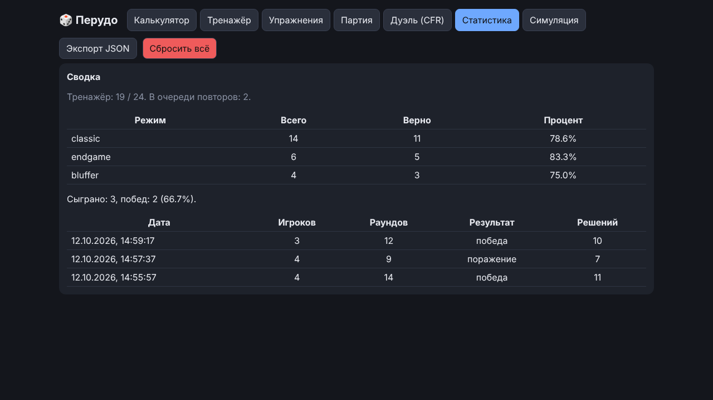
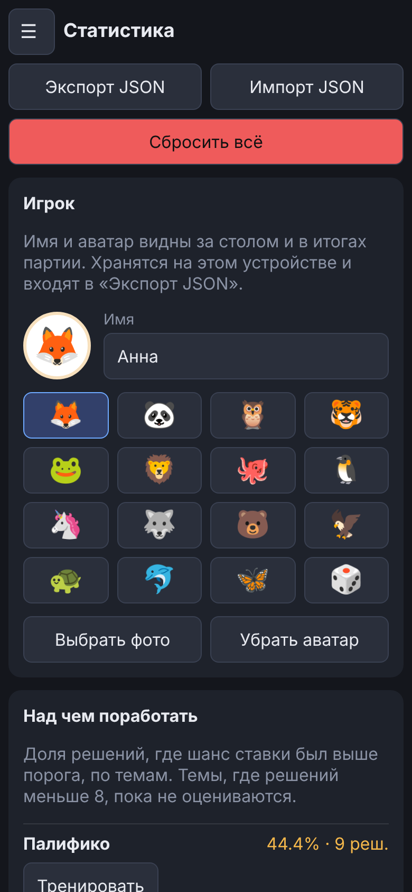
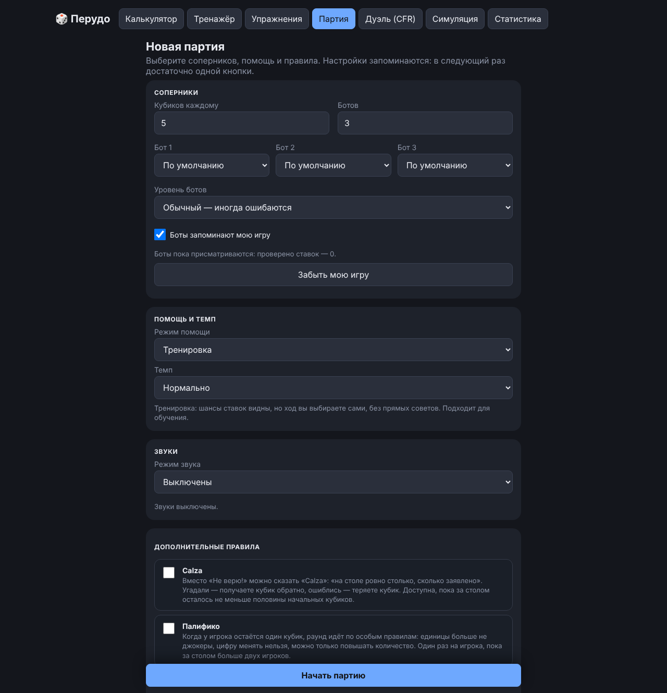
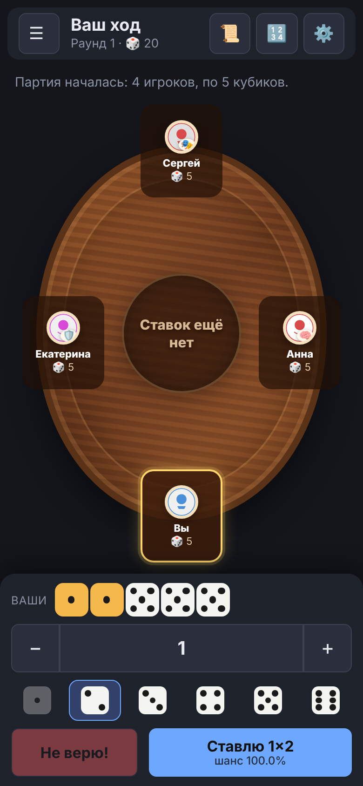

Руководство / Статистика
Статистика
Итоги ваших партий и тренировок, слабые темы, профиль игрока и оформление.
Вкладка разделена на три части: «Результаты», «Игрок» и «Данные». Выбранная часть запоминается до закрытия страницы. Переключаться можно мышью, касанием и стрелками ← →. О третьей части рассказывает отдельная страница.
Результаты
Эта часть открывается по умолчанию.
- Итоги крупно: сколько партий сыграно (и побед), доля верных решений в Тренажёре (сколько верно из скольких) и сколько ситуаций ждёт повтора. Пока данных мало, вместо процента стоит «мало данных»: процент по режиму считается от 8 решений, по партиям — от 5.
- «Над чем поработать»: до трёх тем, где доля решений с шансом ставки выше порога самая низкая (эндшпиль, последний кубик, Палифико, единицы, большой стол, проверки, повышения). Рядом число решений. Темы, где их меньше 8, пока не оцениваются и перечислены отдельно. У тем с подходящим режимом есть кнопка «Тренировать»: она открывает Тренажёр в этом режиме.
- Сводка по режимам Тренажёра и список партий: одна строка на партию («19.10 · победа · 4 игрока · 19 раундов · 15 решений»). Показаны последние 10, остальные открываются кнопкой «Показать все» (всего хранится 200).
- Если играть ещё не начинали, вместо таблиц с нулями вы увидите подсказку и кнопки «Сыграть партию» и «Открыть тренажёр».


Игрок
Здесь задаются имя (до 20 символов) и аватар: эмодзи на выбор или своё фото. Фото обрезается до квадрата и сжимается до нескольких килобайт прямо в браузере, на сервер оно не уходит. Выбор аватара свёрнут: видны имя и текущий аватар, сетка открывается по кнопке «Изменить».
Имя и аватар видны за столом и в итогах партии вместо «Вы». Их можно менять и посреди партии. Они входят в «Экспорт JSON».
Оформление
Там же, на вкладке «Игрок», выбирается тема:
- «Системная» следует настройке устройства и меняется вместе с ней;
- «Светлая» — действует по умолчанию;
- «Тёмная».
Выбор применяется сразу, хранится в браузере и входит в экспорт JSON и резервную копию. Тема ставится до отрисовки страницы, поэтому при загрузке ничего не мигает. Эту же тему использует и руководство. Стол с деревом и сукном выглядит одинаково в обеих темах.

